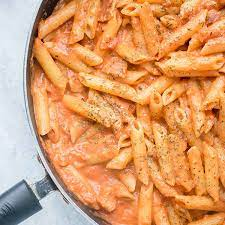

Penne Vodka

Description
Penne alla vodka is a pasta dish made with vodka and penne pasta, usually made with heavy cream, crushed tomatoes, onions, and sometimes sausage, pancetta or peas. The recipe became very popular in Italy and in the United States around the 1980s, when it was offered to discotheque customers.
Ingredients
- 1 pound penne
- 3 cloves garlic, minced
- 1 whole medium onion, chopped finely
- 3 tablespoons butter
- 2 tablespoons olive oil
- 1 cup vodka
- One 14-ounce can tomato puree or tomato sauce
- 1 cup heavy cream
- 1 generous pinch red pepper flakes, plus more if needed
- 1/4 to 1/2 teaspoon salt
- Freshly ground black pepper
- Grated Parmesan, for serving
Steps
- Cook the pasta according to package directions.
- Saute the garlic and onions in 2 tablespoons butter and the olive oil in a saucepan over medium heat until soft
- Pour in the vodka, being careful if your stove has an open flame (remove the pan from the heat before adding). Cook and reduce for 2 to 3 minutes, then pour in the tomato puree.
- Stir the mixture until it's thoroughly combined, then reduce the heat to low. Pour in the heavy cream.
- Stir to combine, then turn heat to the lowest simmer possible. Sprinkle in the red pepper flakes and add salt and pepper to taste.
- Finally, stir in the remaining 1 tablespoon butter. Pour the drained pasta into the sauce and toss to combine. Sprinkle on the parmesan, then sprinkle on more red pepper flakes if desired.